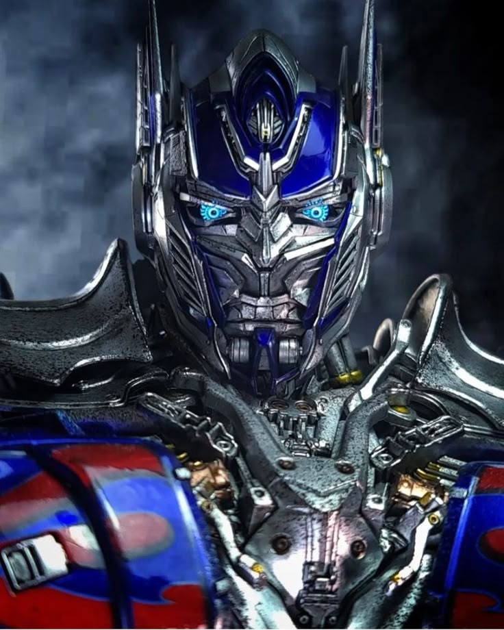

Optimus Prime
Perfil
Líder Supremo dos Autobots com milênios de experiência acumulada na vanguarda de operações táticas e governança transplanetária. Especialista em gestão de crises de escala global, possuo um histórico sólido na condução de equipes multidisciplinares em cenários de alta complexidade e risco extremo. Minha trajetória é marcada pela habilidade em mediar conflitos intergalácticos e implementar estratégias de defesa que priorizam a preservação da vida e da liberdade acima de tudo.
Atualmente, foco meus esforços na integração de tecnologias avançadas com as infraestruturas terrestres, buscando soluções inovadoras para a segurança cibernética e a sustentabilidade de recursos energéticos vitais. Paralelamente à atuação militar e estratégica, dedico-me ao aprimoramento técnico na área da gastronomia, aplicando o rigor e a precisão da engenharia de Cybertron no desenvolvimento de processos culinários de alta performance no Instituto Federal do Paraná.
Reconhecido pela resiliência, ética inabalável e capacidade de adaptação rápida a novos ecossistemas, estou pronto para enfrentar os desafios mais exigentes do mercado global, convertendo ameaças iminentes em oportunidades de cooperação e crescimento mútuo.
Principais Competências
- Liderança executiva e gestão de cx onflitos
- Estratégia de defesa e segurança cibernética
- Manutenção de distemas mecânicos complexos
- Comunicação diplomática
- Transformação e adaptação em ambientes dinâmicos
Formação Acadêmica
Doutorado em Liderança Estratégica - Academia de Iacon City
Bacharelado em Engenharia de Defesa - Universidade de Tecnologia de Cybertron
Tecnólogo em Gastronomia- Instituto de Educação, CIência e Tecnologia do Paraná
Técnico em Desenvolvimento de Sistemas- Instituto de Educação, CIência e Tecnologia do Paraná
Contato
Endereço: Base dos Autobots, Setor 7, Barragem Hoover, Estados Unidos da América, Terra
Telefone: +55 45 3574-1060.